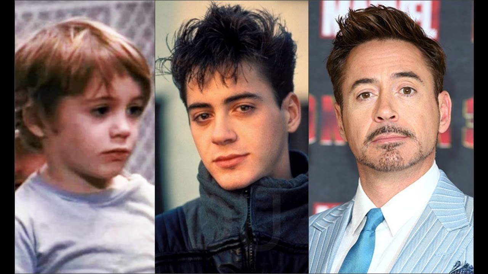

Downey was born in Manhattan, New York City, the younger of two children. His father, Robert Downey Sr., was an actor and filmmaker, while his mother, Elsie Ann (née Ford), was an actress who appeared in Downey Sr.'s films.[5] Downey's father was of half Lithuanian Jewish, one-quarter Hungarian Jewish, and one-quarter Irish descent,[6][7][8][9] while Downey's mother had Scottish, German, and Swiss ancestry.[10][11][12] Robert's original family name was Elias which was changed by his father to enlist in the Army.[13] Downey and his older sister Allyson grew up in Greenwich Village.[14]

As a child, Downey was "surrounded by drugs." His father, a drug addict,
allowed Downey to use marijuana at age six, an incident which his father
later said he regretted.[14] Downey later stated that drug use became an
emotional bond between him and his father: "When my dad and I would do drugs
together, it was like him trying to express his love for me in the only way he
knew how." Eventually, Downey began spending every night abusing alcohol
and "making a thousand phone calls in pursuit of drugs".[15][16]
During his childhood, Downey had minor roles in his father's films. He made his acting debut at the age of five, playing a sick puppy in the absurdist comedy Pound (1970), and then at seven appeared in the surrealist Western Greaser's Palace (1972).[11] At the age of 10, he was living in England and studied classical ballet as part of a larger curriculum. [17][18] He attended the Stagedoor Manor Performing Arts Training Center in upstate New York as a teenager. When his parents divorced in 1978, Downey moved to California with his father, but in 1982, he dropped out of Santa Monica High School, and moved back to New York to pursue an acting career full-time.[19]